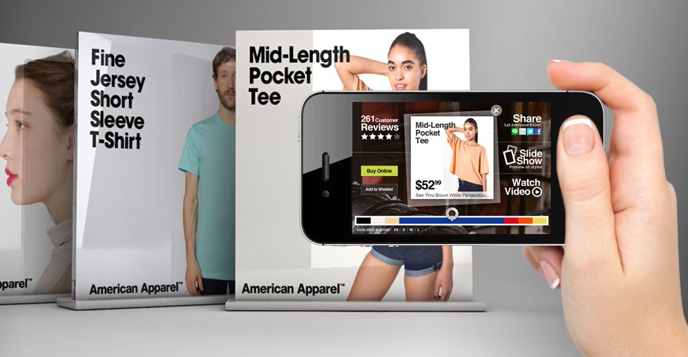
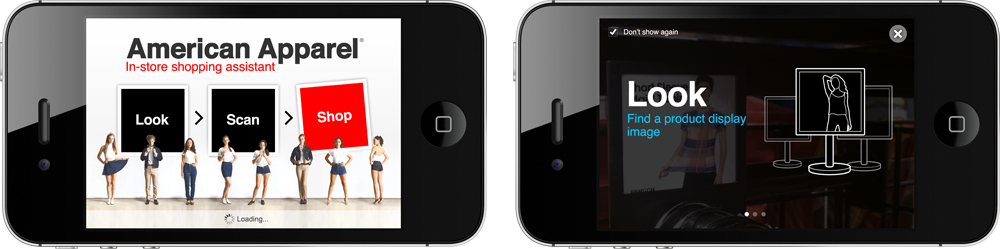
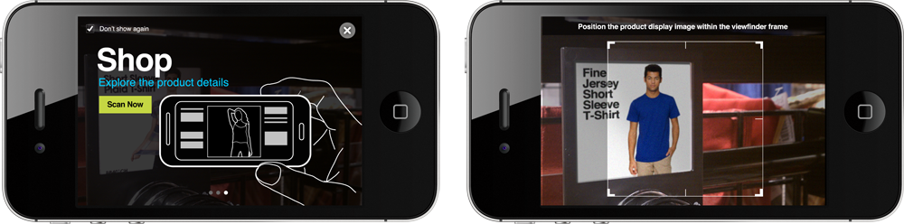
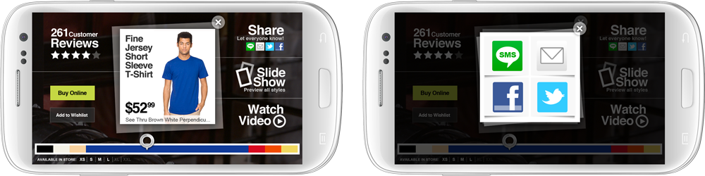

objectives
to build a mobile prototype to showcase the release of Qualcomm new Vuforia 2.0 SDK by featuring a computer vision-based image search that offers Cloud Recognition.
this version of Vuforia SDK makes the requirement of having AR targets baked into the application a thing of the past. by using Image Recognition, brands now have the potential to efficiently and effectively include every product in their inventory as part of an AR experience (without the need to have separate marker).
how it works
use the app to scan in-store retail signage. the app searches for AR targets by pinging the cloud for recognition. once the app pings the cloud, the product then augments onto the screen along with product/purchase options, reviews, and an image gallery.
with real-time product information, customers are equipped to make an educated purchase while enjoying the AR experience.
role + responsibilities
creative director
- responsible for the overal creative direction, UX and usability of the prototype
- led team of designers and developers to deliver scalable mobile prototype that will runs smoothly on both iOS and Android mobile devices
**client**
qualcomm | **us**
deliverables
working prototype (BETA) developed for iOS (iPhone) & Android (smartphone)
process
agile-led project management with daily stand-up, backlog and unified communication tool using Pivotal Tracker project management tool
deliverables snapsots some snapshots of the Qualcomm/American Apparel mobile prototype as featured on iOS (iPhone) and Android (smartphone) devices.



. . . . .
#trigger, #shanghai, #losangeles, #3D-AR, #vuforia, #CreativeDirection, #apps, #ios, #android, #design, #ux
. . . . .